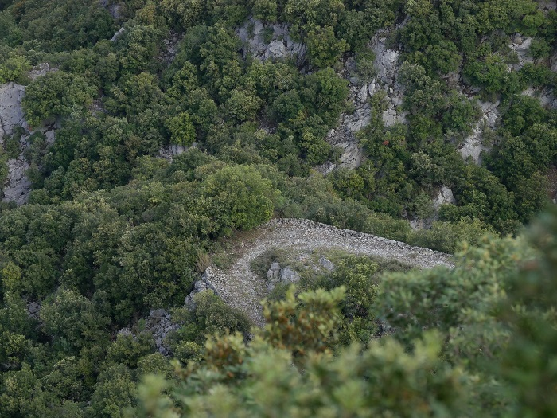

Plateau de planèses depuis la croix
Si je pose cette question, c'est à la suite d'un passage mystérieux, pour moi, du livre de Louis Cardaillac « Félix Armand et son temps, un siècle d'histoire dans les Pyrénées audoises 1740-1840 ». En effet, Félix Armand a introduit à Saint Martin la culture de la pomme de terre, cela ne fait aucun doute. Mais les a-t-il vraiment plantées à Planèses ? Comment peut-on faire pousser sur un plateau aride des pommes de terre ? Le plateau est fertile, certes : une cuvette qui peut vraisemblablement être le cratère d'un volcan (à prouver géologiquement), mais sans source permettant d'irriguer la moindre parcelle de terrain, sans puits avant la construction de la citerne en 1897. Même si mon arrière grand-père a vécu plus de la moitié de sa vie sur ce plateau, il n'a pu y découvrir que quelques mini-résurgences qu'il s'est bien gardé de partager avec d'autres que ses moutons.
Pourtant le plateau fut largement cultivé comme le montre ces photos aériennes des années 50.

Vue générale avec St Martin au centre haut et le plateau de planèses en bas droite, la plus grande des étendues cultivées

Vue du plateau de planèses en plus gros plan et du chemin qui y mène
Chemin de Planèses en épingle à cheveu en bordure du cap de fer (Photos Paul Teulière)

Chemin de Planèses, vues depuis l'épingle à cheveu (Photos Paul Teulière)
Outre les cultures, le plateau en sa périphérie a beaucoup servi pour l'élevage de moutons, on peut encore voir les traces des nombreuses bergeries.
Aujourd'hui cet espace est mangé au 3/4 par la forêt qui a repris ses droits (ou a été volontairement plantée, bien alignée comme vous pourrez le constater si vous y allez), mais reste une grande prairie plate couverte de hautes herbes la plus part du temps jaunies (vert terne, gris clair au mieux au printemps) qui se prolonge jusqu'au précipice de fin du plateau qui sera mieux détaillé à la page suivante).
Le chemin qui mène au plateau de planèses (ou planèzes) fait parti du circuit balisé d'une bande de peinture jaune, qui part de la place de St Martin.
Ce chemin daterait de 1901 avec de nouveaux travaux complémentaires d'élargissement en 1905.1
Précédemment il fallait passer par Artosoul pour accéder au plateau.

Une citerne a été votée par le conseil municipal à l'été 1896 et décidée en octobre 18981. Légèrement en contre bas du chemin actuel, au milieu du bois précédant la prairie, on y accède en suivant les traces des sangliers qui nous ont précédé.
L'eau y était si claire qu'on pouvait même s'y abreuver, Ne pas tenter aujourd'hui. Une pompe permettait de puiser facilement cette eau. La citerne est alimentée par une petite veine d'eau qui permet le remplissage en hiver mais beaucoup plus difficilement en été, sûrement pas pour alimenter tous les champs qu'on peut voir ci-dessus.


La bergerie des Castella en 1940

La bergerie des Castella aujourd'hui

La bergerie des Bezia aujourd'hui
Le chemin de planèses à la particularité de couper plusieurs strates de sols différents.
Son tracé actuel est assez récent (début du XX° siècle). Il ne suit pas les pentes naturelles du terrain mais a fait l'objet d'un terrassement sur toute la pente nord. Est-ce ce terrassement qui explique cette diversité géologique des pierres qu'il est possible de trouver sur le chemin ? Des galets d'Aude à des hauteurs déjà conséquentes par rapport à la vallée, de nombreux fossiles et autres natures de minéraux qu'on ne trouve pas en surface sur les autres chemins autour de St Martin. Ci-dessous quelques exemples de minéraux trouvés directement sur le chemin.

Attenant à Planèses, à l'est se trouve une nouvelle petite cuvette, tout aussi fertile et de même nature de terrain, même si plus pentue.

Planèses et Le Clot en bas à droite - Cadastre de 1833

Planèses et Le Clot en bas à droite - Vue aérienne de 1950 + cadastre actuel
Même si l'accès ne se fait plus par Planèses mais par le col du Campérier, Le Clot est devenu le territoire des chasseurs de St Martin. Un reste d'instrument agricole très ancien a pu être retrouvé dans ce lieu (non daté à ce jour).


la clairière du Clot et ses grands pins couchés - Au centre de la cuvette les grands arbres, années après années se couchent et s'empilent, les derniers à être tombés...

Le Clot a la particularité de présenter de nombreux tas de petites pierres empilées là pour nettoyer les parcelles. Leur nombre pris sur de la terre cultivable m'étonne. N'aurait-il pas été plus "productif" de se débarrasser autrement de ce surplus de cailloux ? D'autant que les tas ne semblent pas avoir été limités par des murs et qu'on ne retrouve pas ce même "gaspillage" à Planèses.
Remarque : Le plateau de planèses est principalement orthographié Planèzes ou Planèze dans les registres des délibérations du conseil municipal
1 Archives départementales de l'Aude - 2OP2781, 2OP2782